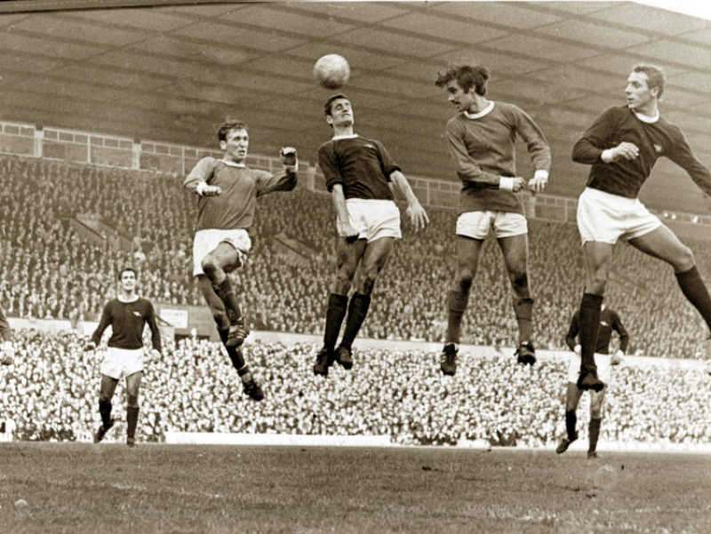

☰
Premier League
Premier League este o competiție profesionistă pentru cluburi de fotbal, localizată în primul eșalon al sistemului de ligi ale fotbalului englez. Disputată de 20 de cluburi, se bazează pe un sistem de promovare și retrogradare în Football League. Sezonul începe în august și se termină în mai. Fiecare echipă joacă câte 38 de meciuri, ajungându-se la 380 de meciuri într-un sezon. Multe dintre meciuri au loc sâmbăta și duminica. A fost cunoscută ca The Premiership din 1993 până în 2007. Este una dintre cele mai bune din punct de vedere fotbalistic.

Competiția a fost fondată pe 20 februarie 1992 ca FA Premier League conform deciziei echipelor din Football League First Division care doreau desființarea vechii competiții The Football League creată în 1888 pentru a pune la cale un sistem mai profitabil în ceea ce privește drepturile de televiziune.
De atunci The Premier League a devenit cea mai urmărită ligă de fotbal din lume. Este cea mai profitabilă ligă, profiturile totale ajungând la peste 2 miliarde de £ în sezonul 2008–09. Este în acest moment pe prima poziție în ierarhia UEFA pe baza performanțelor din cupele europene în ultimii 5 ani, urmată de La Liga spaniol și Bundesliga germană.
În ciuda succeselor semnificative în competițiile europene din timpul anilor 1970 și începutul anilor 1980, sfârșitul anilor '80 a reprezentat un punct de cotitură în fotbalul englez. Stadioanele se prăbușeau, suporterii aveau condiții proaste iar huliganismul era prezent mai tot timpul pe stadioanele din Anglia. Mai mult, cluburile engleze au fost interzise timp de 5 ani din competițiile europene din cauza dezastrului de la Heysel din 1985. Football League First Division, care a reprezentat primul eșalon de fotbal tocmai din în 1888, a ajuns cu mult sub Serie A și La Liga ca număr de spectatori și venituri, iar mulți jucători de top au ales să joace în Spania sau Italia pentru condiții și salarii mai bune. Totuși, la începutul anilor '90 lucrurile s-au mai îmbunătățit; la Campionatul Mondial de Fotbal 1990 Anglia a ajuns până în semifinale. UEFA a ridicat interdicția de cinci ani pentru cluburile engleze în anul 1990. Manchester United câștigă Cupa Cupelor UEFA în 1991 și se introduc noi norme de siguranță prin raportul Taylor din luna ianuarie a aceluiași an care a dus la renovări costisitoare pentru ca fiecare spectator să stea pe un scaun și nu în picioare.
Banii din drepturile de televizare au devenit mult mai importanți; the Football League a primit £6.3 milioane pentru un acord pe doi ani în 1986, dar la reînnoirea contractului în 1988, prețul a crescut la £44 milioane pentru patru ani.
Negocierile din 1988 au reprezentat primele semne ale unei ligi separatiste; zece cluburi amenințau că vor pleca și vor forma o „super ligă”, dar au fost convinse în cele din urmă să rămână. Cum stadioanele s-au modernizat și s-au obținut mai mulți bani, echipele de top au vrut să părăsească din nou competiția în încercarea de a primi mai mulți bani.